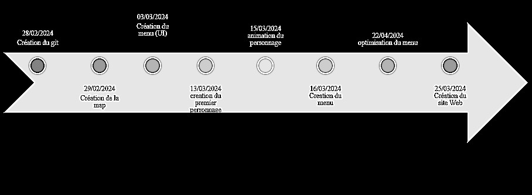

Chronologie de réalisation

Ce jeu nous a demandé énormément de temps, sachant surtout que nous étions tous nouveaux dans le Domaine. Le git fut au début très dur à appréhender et les problèmes de merge arrivaient fréquemment mais par la suite nous avons réussi à comprendre le fonctionnement et c'était plus simple. Un autre point assez complexe fut les animations ,surtout ceux du personnage qui devaient être synchronisés avec les directions choisies par le joueur.
Mais la partie qui nous a pris le plus de temps était le multijoueur notament le fait qu'on devait gérer certaines incohérences notamennt avec la caméra et avec les enemis